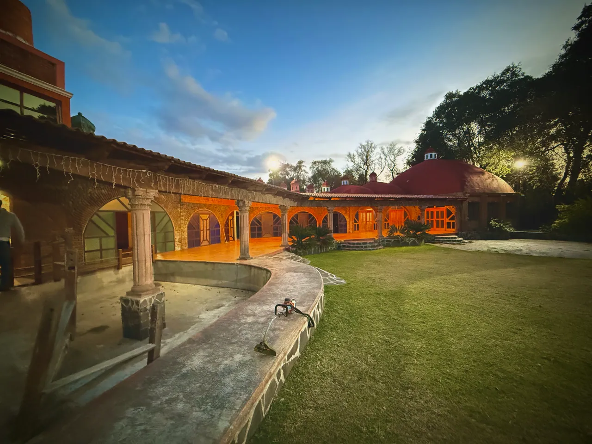
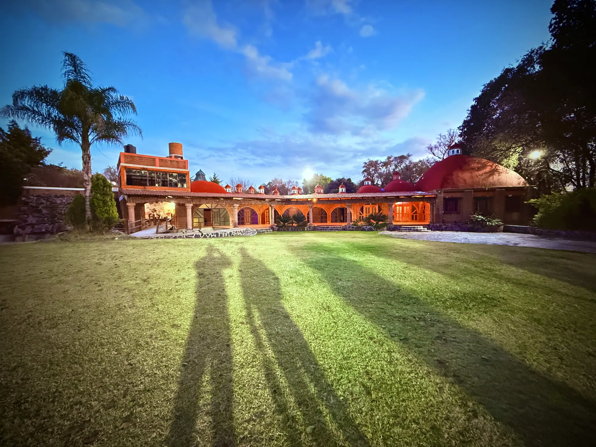
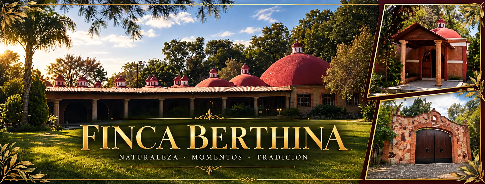
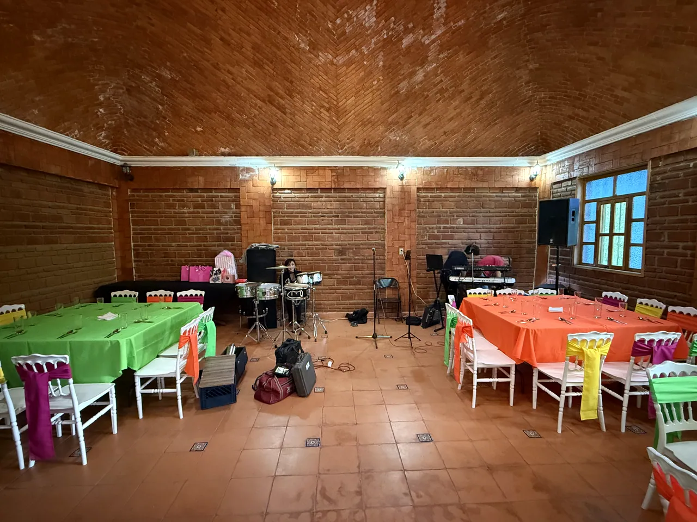
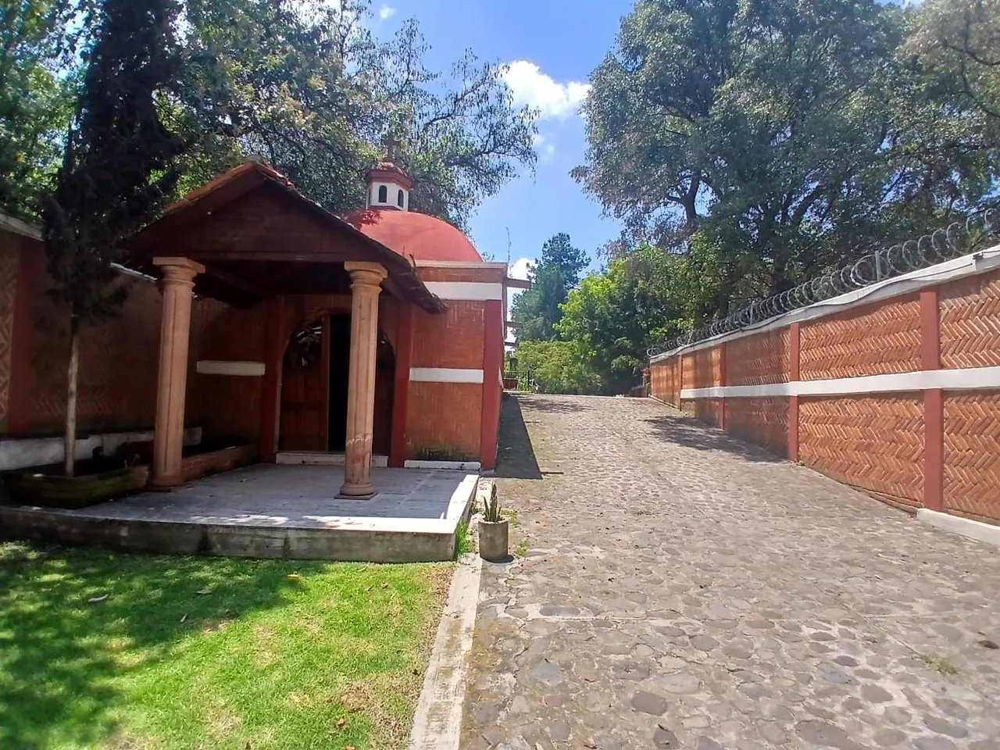

Al aire libre
El jardín
Áreas verdes y senderos para encuentros, celebraciones y fotografías.
Conoce este espacio ↗
En Finca Berthina, nuestros jardines, salón y capilla se convierten en el entorno de tu historia. Un espacio privado con carácter, naturaleza y tradición.

Composición gráfica con fotografías de zonas distintas de la finca. Las imágenes se presentan por separado y no representan un único punto de vista.

Disfruta un gran jardín arbolado, un salón de estilo tradicional y rincones llenos de personalidad. Elige tus proveedores o solicita ayuda para planear tu celebración.
Aquí encontrarás fotografías de nuestros espacios y de eventos celebrados en la finca. Las instalaciones privadas y áreas en rehabilitación no se ofrecen a los clientes.
Conoce la galería →Cada espacio tiene su propia página, fotografías y detalles. Explora con calma lo que podrás integrar a tu evento.

Áreas verdes y senderos para encuentros, celebraciones y fotografías.
Conoce este espacio ↗
Un espacio techado de inspiración rústica para crear el montaje de tu evento.
Conoce este espacio ↗
Un rincón arquitectónico singular. Consulta las condiciones de uso para ceremonias.
Conoce este espacio ↗Descubre cómo se conectan las áreas principales mediante nuestra primera maqueta conceptual interactiva. Acércate a cada espacio y planea tu visita presencial.
La maqueta es orientativa; todavía no es un levantamiento arquitectónico a escala.
Abrir visita 3D ↗
Muy pronto: video oficial de eventos reales en Finca Berthina.
Sección reservada para videosEstamos seleccionando y editando videos de celebraciones realizadas en la finca. Cuando estén aprobados podrás conocer nuestro ambiente en movimiento.
Mientras tanto, descubre las fotografías ↗Comparte qué evento imaginas y recibe atención personalizada. Las cotizaciones se ajustan a cada celebración.